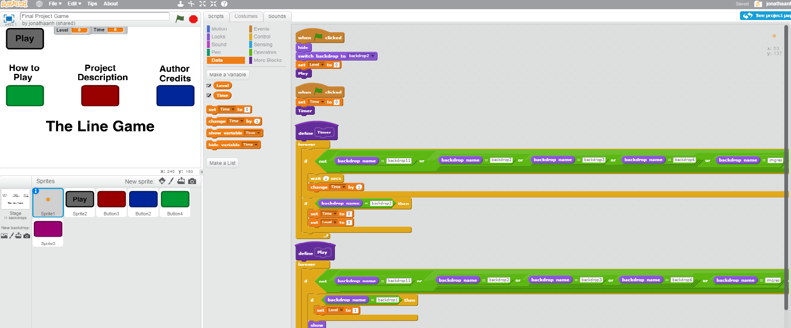

Final Project

Description
This was the final project of the semeste. For my final project, I edited one of my old projects, The Line Game, and improved on it. I added buttons and more screens to make it more user friendly. Overall, I have learned a lot from this class and I will definetly miss it.